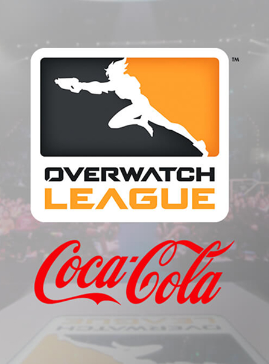

Una nuova community globale.
La Overwatch League è stata concepita come una competizione globale, con squadre associate a città di diversi continenti. Questo modello ha favorito la nascita di una community internazionale, unita non solo dalla passione per il gioco, ma anche da un forte senso di appartenenza. Coca-Cola ha sfruttato questa dimensione per rafforzare la propria presenza in mercati differenti, contribuendo a creare connessioni tra culture diverse attraverso un linguaggio digitale condiviso. In questo senso, la sponsorizzazione diventa uno strumento di aggregazione, capace di superare barriere geografiche e culturali.
Un ulteriore elemento distintivo è la costruzione di una narrazione continua che va oltre il momento della competizione. Le partite, le dirette streaming, i contenuti social e le iniziative promozionali contribuiscono a creare un ecosistema narrativo esteso, in cui il pubblico può immergersi in qualsiasi momento. Coca-Cola si inserisce in questo flusso come elemento ricorrente e riconoscibile, contribuendo a rafforzare la coerenza dell’esperienza e a mantenere alta l’attenzione nel tempo. In questo modo, l’intrattenimento non è più limitato all’evento in sé, ma diventa un’esperienza distribuita e costante.
